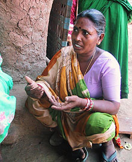

|
 |
 |
Puntos de
Inflexión Ecológica
- Cómo funcionan?
- Transformando círculos viciosos a círculos virtuosos
- Ingredientes para el éxito
- Elaboren sus propios Puntos de Inflexión Ecológica
Historias por Región
Historias por Tema
- Agricultura
- Agua y Cuencas
- Bosques
- Ecosistemas Urbanos
- Educación
- Energía
- Negocios
- Pesquerías
- Salud Pública
Videos Cortos
- Salvando un arrecife coral y una pesquería
(Filipinas) - Revitalizando vecindades urbanas con jardines comunitarios
(Nueva York) - Revirtiendo la deforestación tropical con bosques comunitarios
(Thailandia) - Rellenando aguas subterráneas con captación pluvial
(Rajastán, India) - Escapando la trampa de pesticidas
(India)
Explicando el Éxito
- Salvando un arrecife coral y una pesquería
(Filipinas) - Revitalizando vecindades urbanas con jardines comunitarios
(Nueva York) - Revirtiendo la deforestación tropical con bosques comunitarios
(Thailandia) - Rellenando aguas subterráneas con captación pluvial
(Rajastán, India) - Escapando la trampa de pesticidas
(India)

Ecología Humana: Presenta los principios de la ecología humana que sirven de fundamento a los Puntos de Inflexión Ecológica

La Misión del Proyecto Puntos de Inflexión Ecológica
Nuestra misión es desarrollar y difundir los principios básicos y las aplicaciones prácticas de los Puntos de Inflexión Ecológica.
Objetivos Concretos:
- Pulir el paradigma de los Puntos de Inflexión Ecológica y sus principios básicos, y explicar como los Puntos de Inflexión Ecológica funcionan y como pueden aplicarse.
- Desarrollar una serie de herramientas procesales para que personas puedan generar Puntos de Inflexión Ecológica en sus propias comunidades.
- Difundir los principios y procedimientos de los Puntos de Inflexión Ecológica a través de una variedad de medios.
- Colaborar en el apoyo a personas que quieran poner en acción los Puntos de Inflexión Ecológica.
Proyecto Puntos de Inflexión Ecológica
A la mayoría nos preocupan seriamente los actuales y futuros impactos de la problemática ambiental en nuestras vidas. Deseamos hacer algo, pero nos sentimos abrumados por la escala y complejidad de los problemas y por las poderosas fuerzas sociales detrás de ellos. Los Puntos de Inflexión Ecológica nos brindan un enfoque para entender esta complejidad de manera que facilita acciones efectivas.
El Proyecto Puntos de Inflexión Ecológica comenzó en Enero del 2004, cuando el ecólogo Gerry Marten y periodista Steve Brooks pensaban en como comunicar los principios de interacciones sustentables entre humanos y ecosistemas. Gerry ya había presentado dichos principios en su libro de texto: Ecologia Humana: Principios Básicos para el Desarrollo Sustentable y ahora quería proponerlos a un publico más grande. Gerry y Steve concluyeron que los "puntos de inflexión" abarcan muchos de los principios más importantes, y demuestran como podemos revertir el deterioro ambiental para lograr la restauración.
Para explorar como esta nueva perspectiva aplicaría al mundo real, la periodista Amanda Suutari recopiló cerca de cien historias de éxito ambientalista. Estas historias de alrededor del mundo abarcan una diversidad de ecosistemas, contextos culturales y socio-económicos, y problemáticas ambientales. Y cada historia tiene un punto de inflexión. Realizamos visitas de campo para documentar veinte de estas historias a detalle, utilizando el paradigma de los Puntos de Inflexión para extraer lecciones que pueden inspirar y guiar a cualquiera en nuestros esfuerzos por lograr la sustentabilidad.
Los detalles de este guión desembocan en los principios funcionales básicos de los Puntos de Inflexión Ecológica. También nos brindan las herramientas necesarias para poner en acción los Puntos de Inflexión.
Deseamos compartir lo que hemos aprendido con cualquier interesado: profesionistas, funcionarios de gobierno, educadores, estudiantes, hombres de negocios y grupos comunitarios. Para empezar, hemos desarrollado una presentación PowerPoint que utilizamos para explicar los Puntos de Inflexión a organizaciones profesionales y comunitarias. También hemos comenzado a publicar artículos en publicaciones profesionales y revistas populares. Los siguientes ya se han publicado:
- Puntos de Inflexión Ecológica (Our Planet). La gestión comunitaria de manglares no solo salva a los manglares sino que restaura la pesquería costera y el sustento de una comunidad.
- Puntos de Inflexión Ecológica: Una Nueva Perspectiva en el Ambientalismo Estratégico (WorldWatch Magazine). Recomendamos ampliamente este artículo para obtener una reseña de lo que son los Puntos de Inflexión Ecológica.
- Puntos de Inflexión Ecológica: Un Nuevo Paradigma para Restaurar la Seguridad Ambiental (Journal of Policy Studies). La historia de como comenzaron los Puntos de Inflexión Ecológica.
- La Limpia: Recuperándose de la adicción a pesticidas (The Ecologist). Una inspiradora historia de Puntos de Inflexión Ecológica sobre como agricultores de algodón en la India lograr escapar del infierno de los pesticidas.
- Puntos de Inflexión Ecológica: Como un Círculo Vicioso puede volverse Virtuoso (Earth Island Journal). Como convertir un círculo vicioso en círculo virtuoso. Comunidades costeras al sur de Tailandia y norte de California hacen uso de los servicios gratuitos de la naturaleza.
Para profesionistas hemos organizado un simposio sobre Puntos de Inflexión Ecológica durante la conferencia anual de la Society for Human Ecology. También hemos empezado a incorporar los Puntos de Inflexión en la educación básica. Hemos realizado talleres de una semana de duración, auspiciados por el North Carolina Center for the Advancement of Teaching y Society for Organizational Learning's Educational Partnership, para que maestros exploren como pueden utilizar los Puntos de Inflexión.
Actualmente estamos buscando individuos o grupos - de enfoque comunitario, gubernamental, educativo, o empresarial - que quieran trabajar con nosotros en la aplicación de los Puntos de Inflexión Ecológica a su propia situación. Es una oportunidad para comenzar a enfrentar efectivamente la problemática ambiental en su comunidad, mientras nos ayuden a pulir las herramientas de los Puntos de Inflexión y a darles mayor difusión.
Contáctenos si les interesa.
Este sitio web contiene materia traducida del sitio web www.ecotippingpoints.org.
Traducción: David Nuñez. Redacción: Gerry Marten